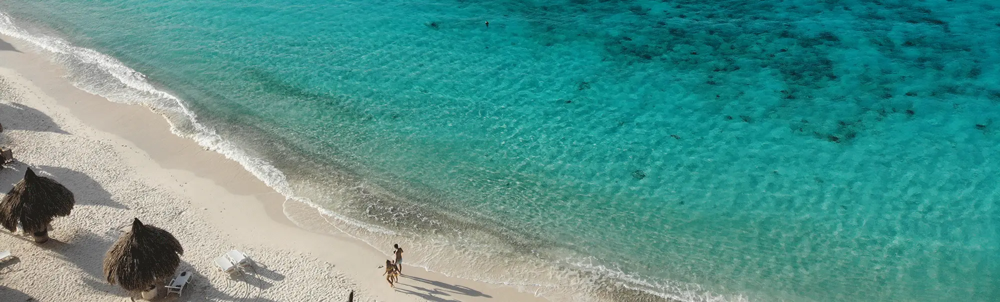

<main>
    <div class="about-us">
        <div class="about-top">
            
            <div class="about-heading">
                <h1>ABOUT US</h1>
                <p>INSPIRING EPIC BEACH DAYS FOR OVER 7 YEARS.</p>
            </div>
        </div>
        <div class="about-text">
            <h2>Welcome to Beauty Of Beaches!</h2>

            <p>At Beauty Of Beaches, we are passionate about showcasing the world’s most stunning beaches. Our mission
                is to
                provide comprehensive and captivating information about famous beaches across the globe, categorized by
                zones:
                North, South, East, and West. Whether you’re planning your next vacation or simply dreaming of sandy
                shores,
                our
                website is your go-to resource for all things beach-related.</p>

            <h2>Our Story</h2>
            <p>The idea for Beauty Of Beaches was born from our love for travel and the mesmerizing beauty of coastal
                destinations. We realized that beaches are not just places to relax and unwind, but they also play a
                significant
                role in the global economy by attracting tourists and creating employment opportunities for local
                communities.
                With this in mind, we set out to create a platform that celebrates these natural wonders and helps
                travelers
                discover their next beach paradise.</p>

            <h2>What We Offer</h2>
            <p>Detailed Beach Information: Explore our extensive database of beaches, complete with descriptions,
                photos,
                and
                visitor reviews.
                Zone-Based Navigation: Easily find beaches in your preferred region—North, South, East, or West.
                Stunning Gallery: Browse through our gallery to see breathtaking images of beaches from around the
                world.
                User Feedback: Share your experiences and read feedback from other beach lovers.
                Comprehensive Resources: Access downloadable guides and documents to help plan your beach trips.
                Travel Tips and Advertisements: Find useful travel tips and advertisements for transportation options
                like
                buses
                and flights to reach your favorite beaches.
                Our Vision
                We aim to be the ultimate online destination for beach enthusiasts. By providing accurate and engaging
                content,
                we hope to inspire more people to explore the beauty of beaches and support the local economies that
                depend
                on
                tourism.</p>

            <h2>Contact Us</h2>
            <p>We love hearing from our visitors! If you have any questions, suggestions, or feedback, please don’t
                hesitate to
                reach out to us.</p>

            <P>Email: info@beautyofbeaches.com</P>
            <p>Address: 123 Beach Avenue, Coastal City, Oceanland.</p>
            <p>Phone: +123-456-7890</p>
            <p>Thank you for visiting Beauty Of Beaches. We hope you enjoy exploring the world’s most beautiful
                beaches
                with
                us!</p>
        </div>
</main>